普特融合 · 教育實務章節閱讀版
CHAPTER 03 / 策略 26–38
班級經營與行為規範
在共同底線中容納差異
本章分析避免把資優身分變成比較或要求。透過去標籤、尊重意願、調整常規及同儕支持，建立有原則、也有彈性的班級生活。
以下文字已逐張對照原頁校對；各牌卡仍可展開「對照原文」。
撕除標籤
就事論事，不做身分比較。
學生表現不佳或有不當行為時，在管教時避免使用嘲諷語氣，將資優生與普通生做對立式的比較，保護雙方的自尊。
情境
班級出現成績落差，或是學生表現不佳（如考試成績差、把考卷折成紙飛機玩鬧）時。
教師行動
就事論事糾正行為，避免說出「考得比你高的人都能去資優班了」這類話語。
核心心理
資優生具備極強的自我意識與極高的自尊心，避免公開比較誘發強烈對立，落實普特融合中尊重個體尊嚴的理念。
對照原文 · PDF 第 61 頁
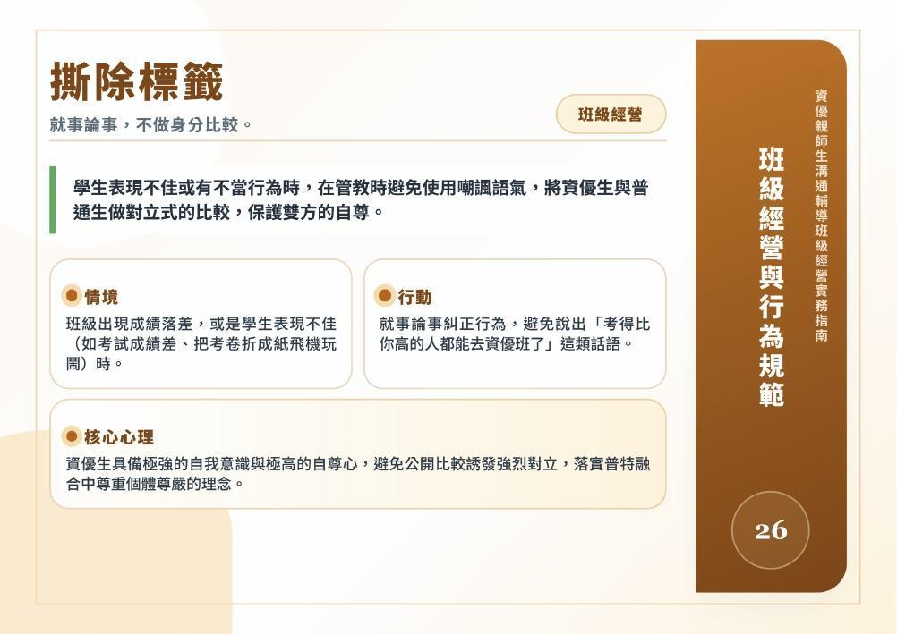
查看牌卡插畫 · PDF 第 60 頁
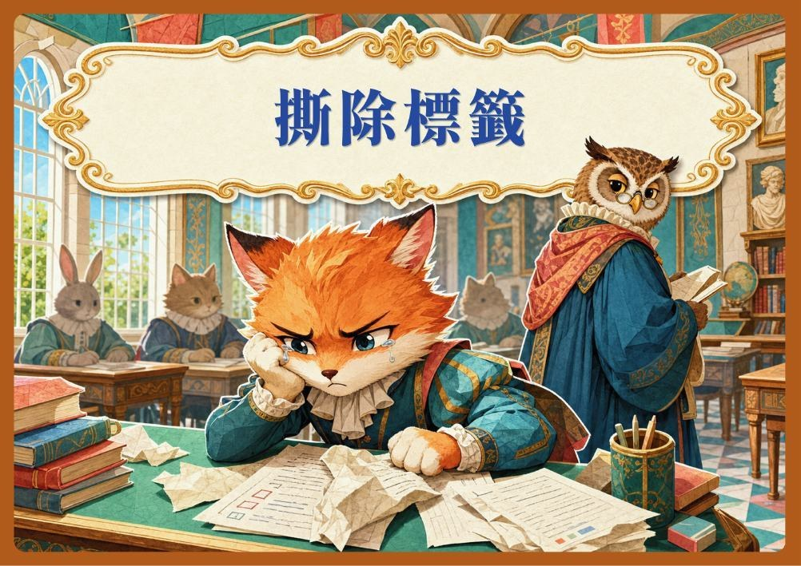
尊重意願
資優不是全能，也不是義務參賽。
破除「資優生即全能」的刻板印象，不強制指派學生參與非其專長或意願的競賽。
情境
學校舉辦特殊專長競賽（如演講、朗讀、科展）或特定才藝比賽，導師在尋求班級代表時。
教師行動
詢問意願優先。若學生抗拒且資優班教師評估不適合，導師應坦然接受轉而發掘其他有潛力的普通生。
核心心理
資優生通常有特定的優勢領域（如數理邏輯、語文演說）。強迫參賽會引發嚴重的表現焦慮與抗拒；尊重意願才能建立穩固的師生互信。
對照原文 · PDF 第 63 頁
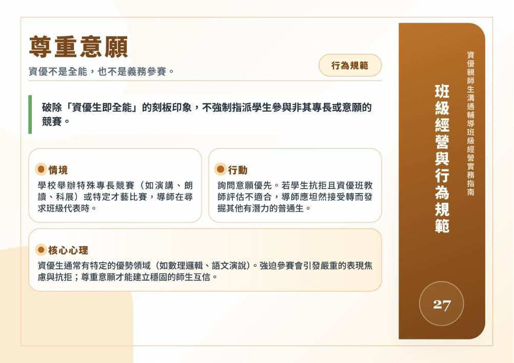
查看牌卡插畫 · PDF 第 62 頁
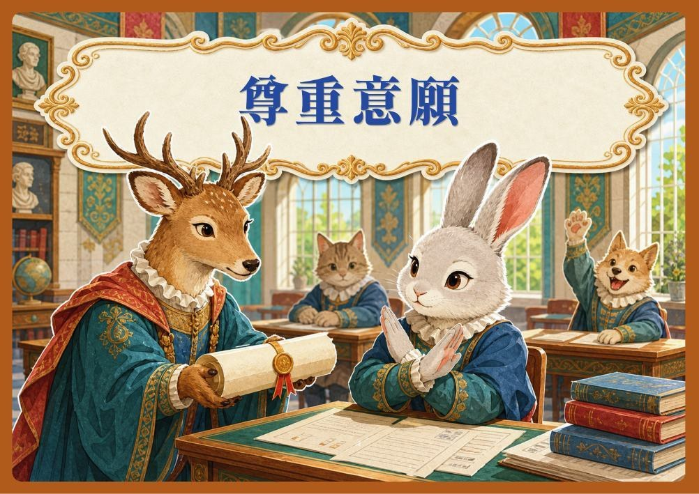
幕後功臣
不上台，也能有貢獻。
肯定內斂型或社恐型資優生的特質，提供非展示型的任務，讓他們以自己的節奏融入班級。
情境
班級籌備表演、比賽等需要全員參與的活動，但資優生極度抗拒上台時。
教師行動
安排具實質貢獻的幕後任務，例如資料統整、多媒體編輯、燈光音控、製作道具等，並在事後公開肯定其幕後價值。
核心心理
高敏感資優生面對公眾注視易產生社交恐慌。轉移至幕後既滿足了他們的「勝任感」與對班級的「歸屬感」，同時也守護了他們的安全感。
對照原文 · PDF 第 65 頁
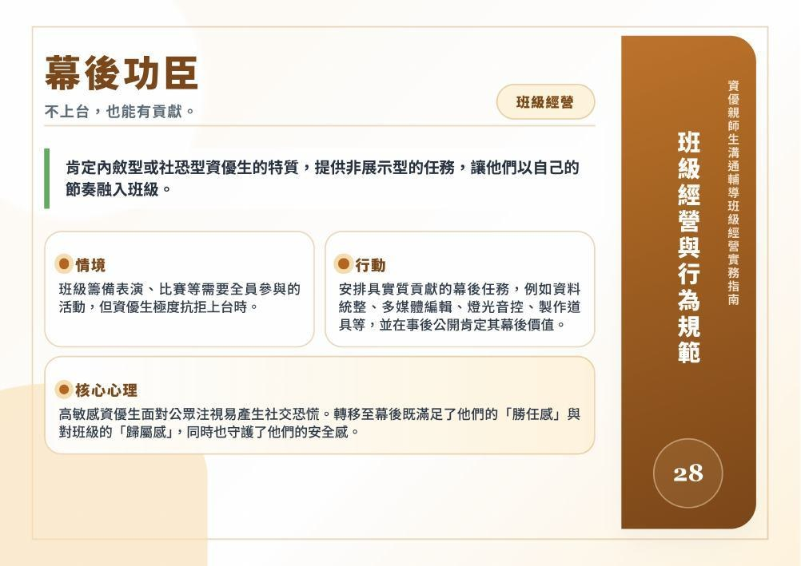
查看牌卡插畫 · PDF 第 64 頁
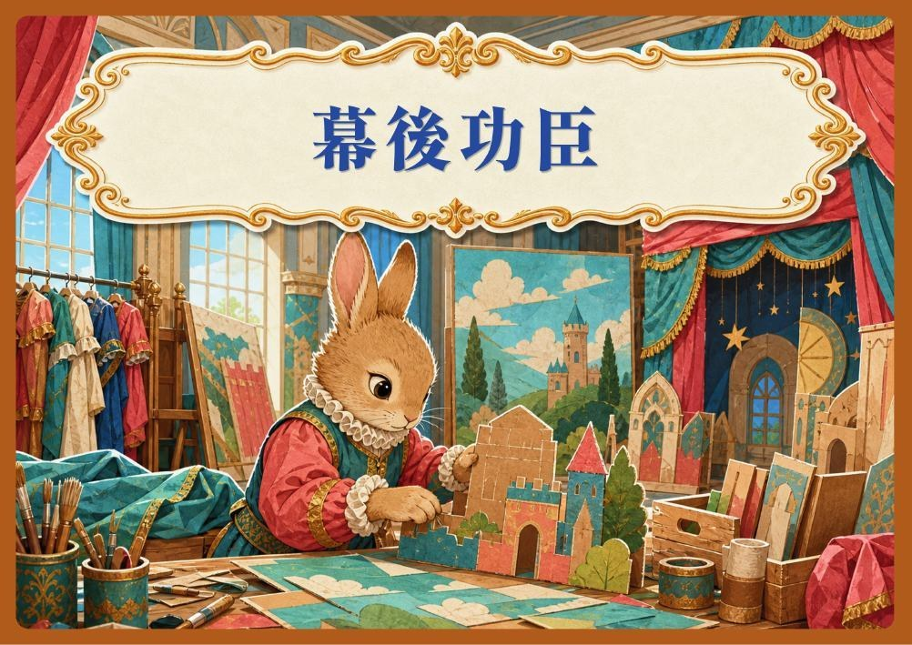
彈性物權
界線清楚，焦點才不偏移。
以明確界線與理性溝通取代強硬侵奪，避免因管教手段引發學生轉移焦點、強烈反抗。
情境
學生在課堂上偷寫資優班作業、做自己的事，或攜帶不合時宜的物品時。
教師行動
當下制止，若屢勸不聽可代為保管，但必須明確約定歸還時間（如：「這堂課我先保管，下課來找我拿」），避免產生「沒收且拒絕歸還」的「侵占」誤會。
核心心理
資優生具備較強的邏輯與權利維護意識。設定期限能讓焦點回歸違規行為本身，不落人口實。
對照原文 · PDF 第 67 頁
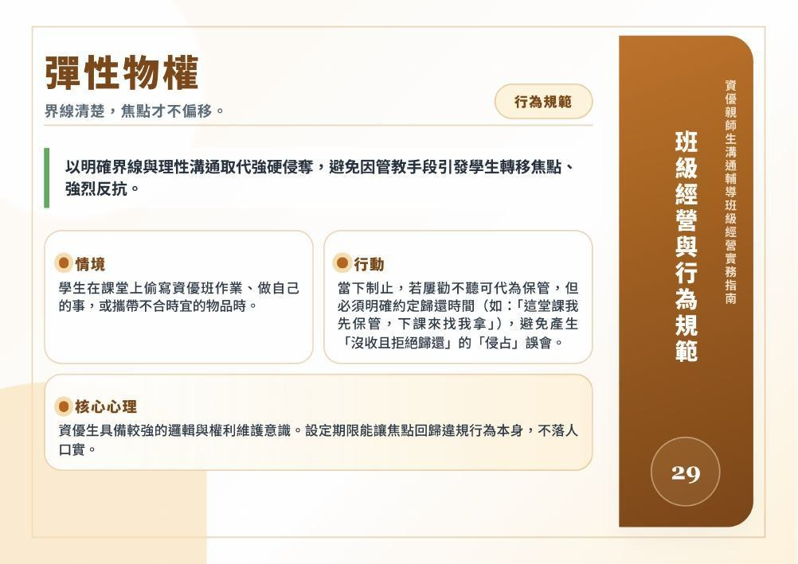
查看牌卡插畫 · PDF 第 66 頁
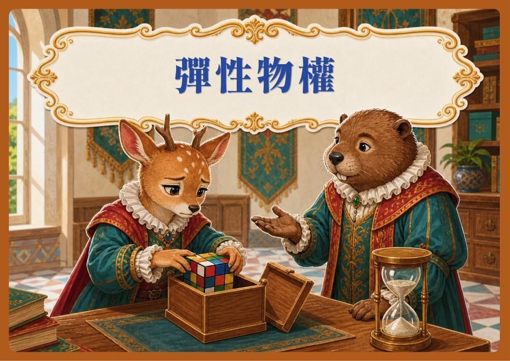
轉化積極
把競爭心轉成學習力。
引導具備領導力與強烈企圖心的資優生，將競爭心轉化為欣賞與向同儕學習的行動。
情境
資優生在班上顯得自負，或在非學業領域（如體育課、分組合作）與同學產生摩擦時。
教師行動
創造情境，鼓勵資優生主動向同學請教（例如：「你的戰術概念很好，但運球技巧可以多向班上的籃球隊長請教」）。
核心心理
透過「主動請教」，能打破資優生「我必須全知全能」的認知盲區。這有助於培養資優生的謙遜與社會同理心，促成健康的雙向互動。
對照原文 · PDF 第 69 頁
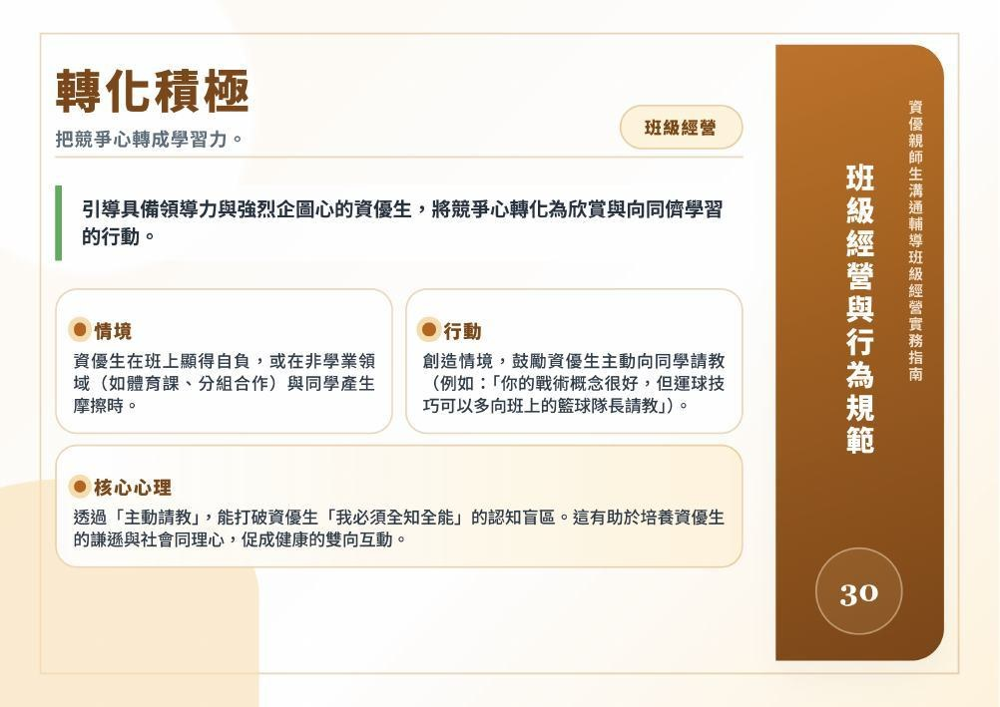
查看牌卡插畫 · PDF 第 68 頁
避免公審
談原則，不公開羞辱。
當學生犯下過失時，避免在群眾面前或網路社群中進行權力壓制式的指責，嚴防引發網路公審與不可逆的名譽傷害。
情境
學生犯下過失、與同學發生摩擦，或違反班規時，以及教師在使用通訊軟體（如LINE群組）或社群平台（如FB、IG）時。
教師行動
若需全班宣導，只談事件與原則，不點名批判；避免要求學生在全班面前低頭認錯。嚴禁在網路群組中公開點名學生，或張貼學生的違規照片、對話截圖，以免造成數位足跡的留存。
核心心理
資優生很重視自尊，公審容易觸發為保全顏面而不認錯、頂嘴等防衛行為。網路公開指責易對學生造成難以抹滅的社會性死亡與心理創傷。
對照原文 · PDF 第 71 頁
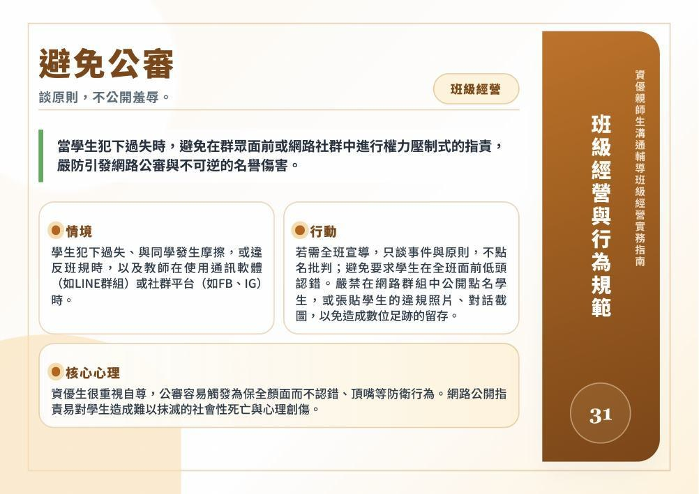
查看牌卡插畫 · PDF 第 70 頁
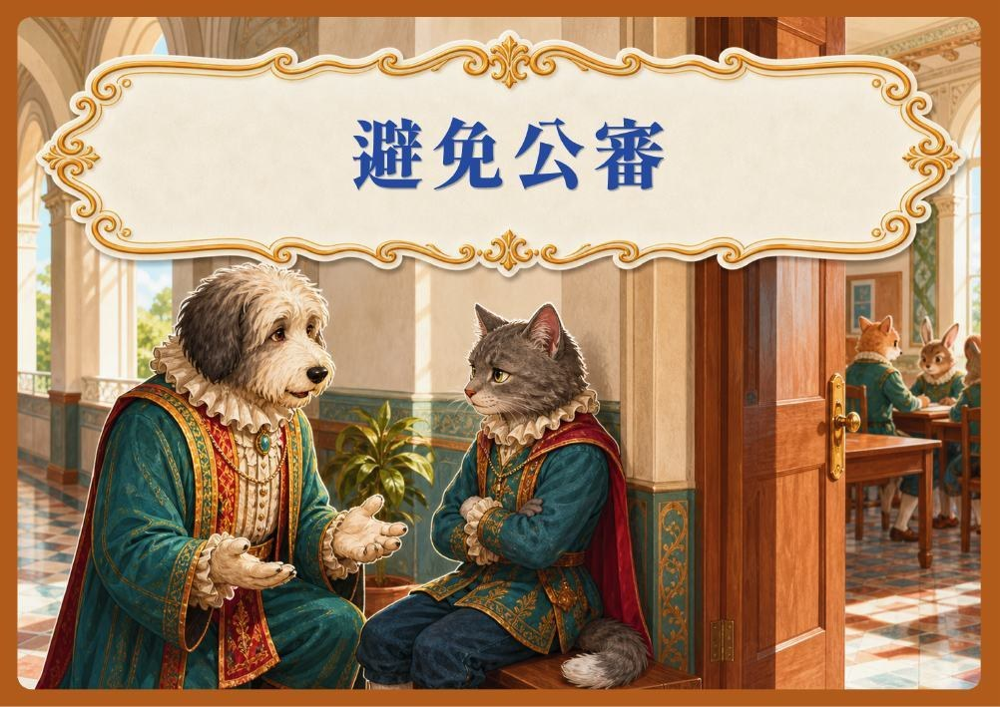
底線一致
欣賞天賦，也守住基本要求。
不因資優生身分而放任其對學校課業的敷衍，堅持基礎教育要求的態度與公平性。
情境
資優生對某些科目沒有興趣，作業敷衍了事或拒絕完成時。
教師行動
肯定學生在專長領域的優秀，但平靜且堅定地退回不合格的作業，要求補齊至班級基本標準，不帶情緒但也絕不放水。
核心心理
資優生常以「投資報酬率」來衡量學習，但教育包含責任感的養成。堅持底線能讓他們理解「社會規範不因個人天賦而豁免」，也能維持班級的公平感。
對照原文 · PDF 第 73 頁
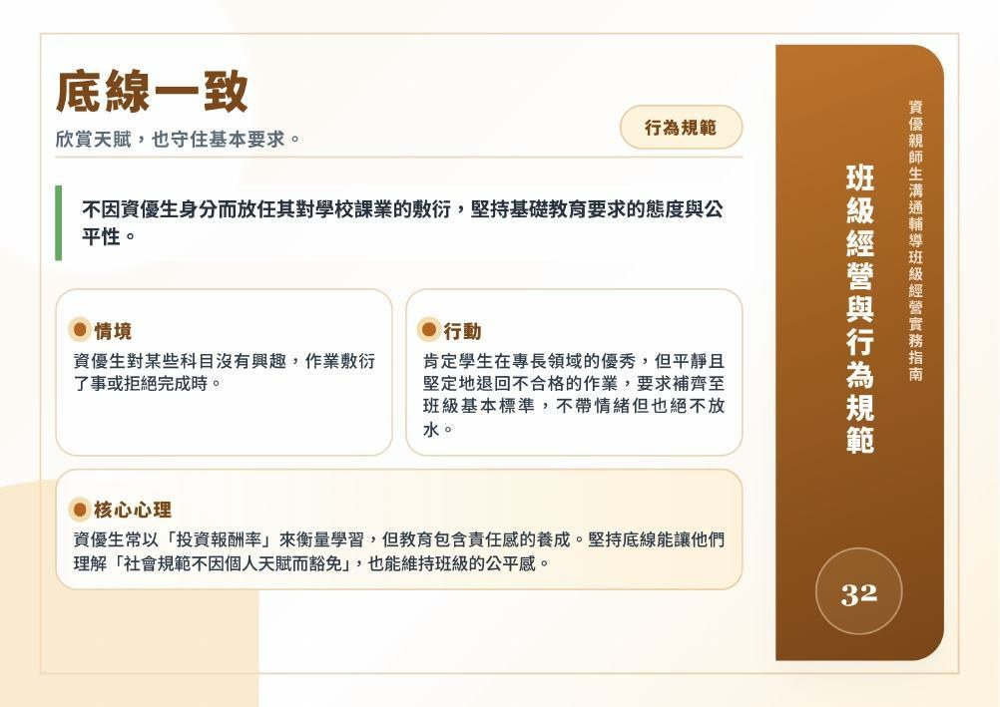
查看牌卡插畫 · PDF 第 72 頁
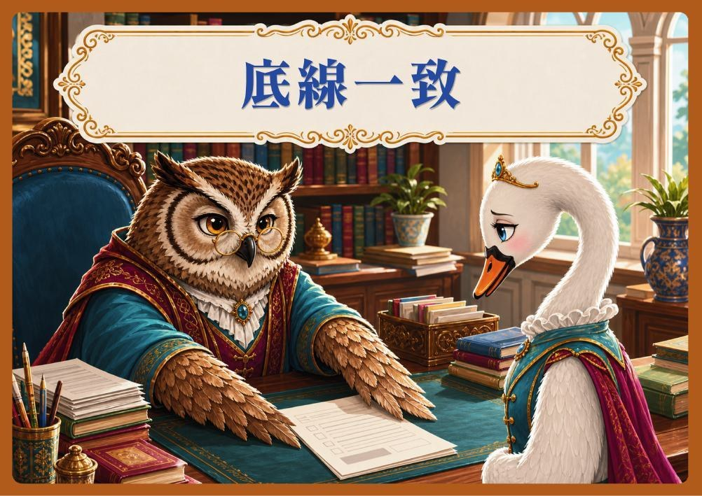
防範孤立
暗中鋪網，不把保護做成標籤。
營造包容的班級氛圍，成為缺乏社會化資優生的隱形安全網，以不著痕跡的方式保護他們免受惡意排擠。
情境
遇到不擅判讀社交線索、說話直白的資優生，在分組或互動中處於被邊緣化或遭針對時。
教師行動
分組時安插包容度高、成熟度佳的同儕同組，並私下教導該生辨識社交情緒，適時介入化解同儕間的惡意。
核心心理
部分資優生有「非同步發展」特質（智商極高但社會情緒發展滯後）。他們需要成人的協助學習解讀世界，但要注意檯面上過度保護會讓他們被貼上標籤。
對照原文 · PDF 第 75 頁
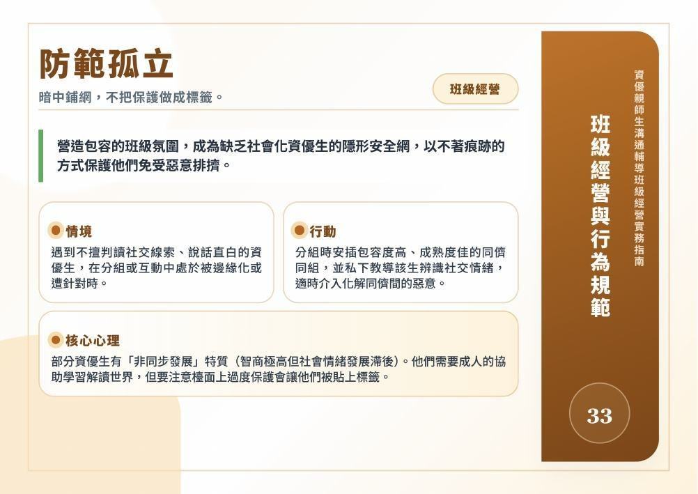
查看牌卡插畫 · PDF 第 74 頁
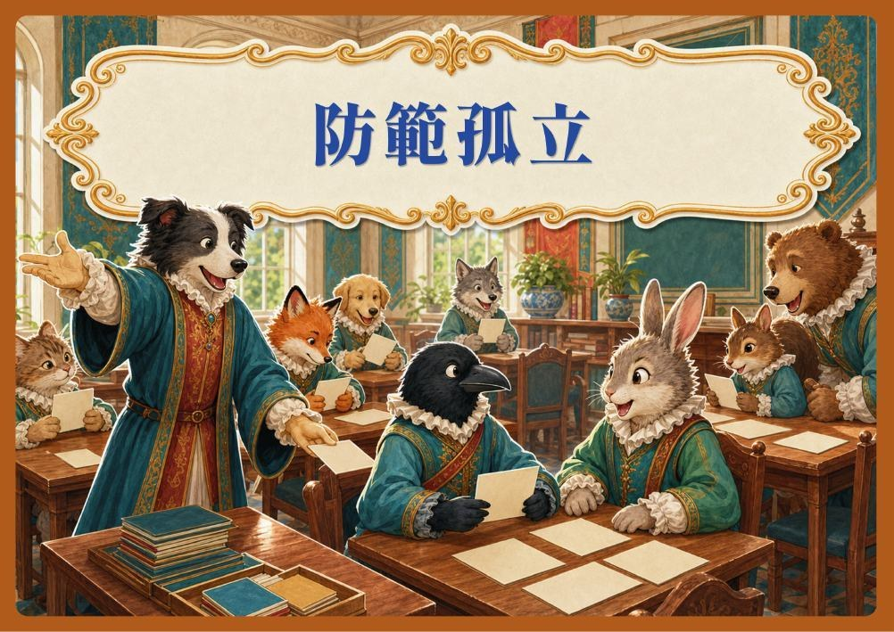
擁抱差異
弱化光環，建立正常連結。
淡化班級內「資優」與「普通」的標籤感，給予正確的群體適應觀念，營造人人平等的班級文化。
情境
資優生頻繁抽離上課、活動，以致班上同學對資優生投以異樣眼光時。
教師行動
將去資優班上課視為常態的一部分。日常安排打掃、班級公差時一視同仁，並教導資優生不以此作為優越感或不參與班級事務的理由。
核心心理
過度強調特權或與眾不同，會阻斷資優生與普通生之間的連結，造成對立。弱化光環能幫助他們建立正常同儕關係。
對照原文 · PDF 第 77 頁
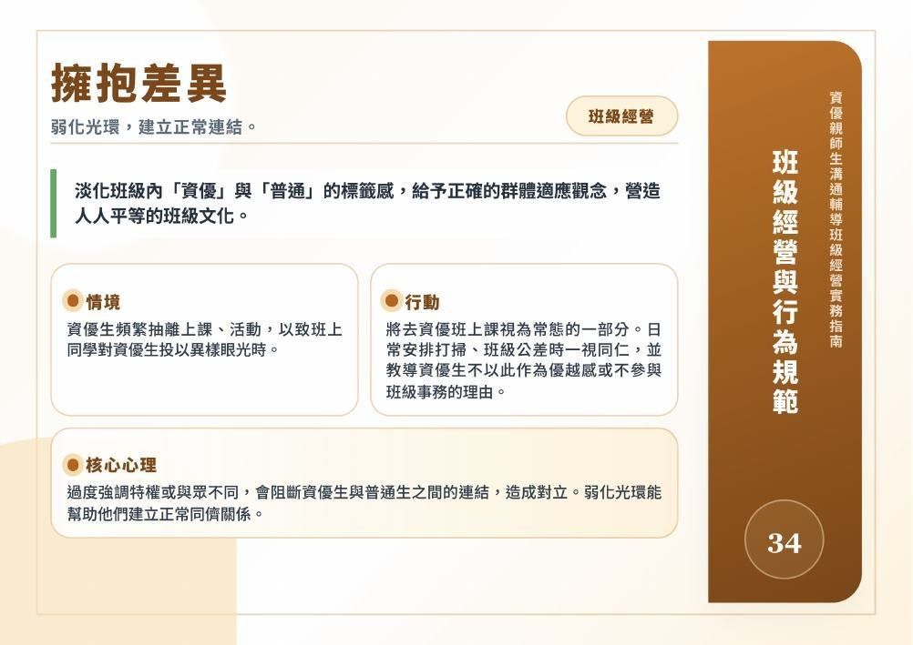
查看牌卡插畫 · PDF 第 76 頁
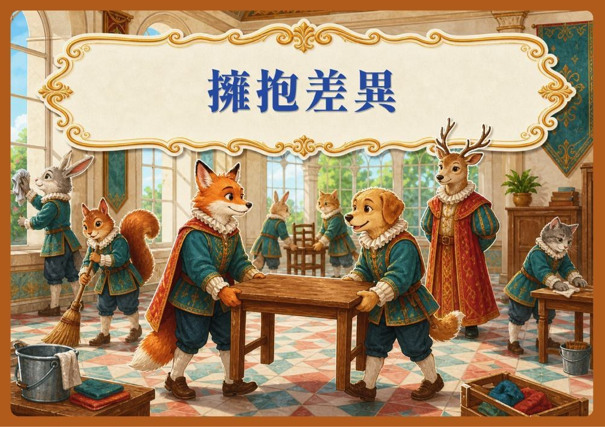
調整常規
有理有據，就給制度內微調。
面對資優生的質疑，只要理由具備邏輯且不損害班級公平，可給予制度內的微調空間。
情境
資優生對某些繁瑣的班級常規（如重複的機械性抄寫、僵化的格式規定）感到反感，並提出有理有據的反駁時。
教師行動
傾聽其背後的邏輯。若確實合理，可採取「契約制」。
核心心理
資優生需要「意義感」與「邏輯說服」，權威式的「規定」只會引發無止境的爭執。在守住公平原則下給予彈性建立「成熟的溝通與協調」。
對照原文 · PDF 第 79 頁
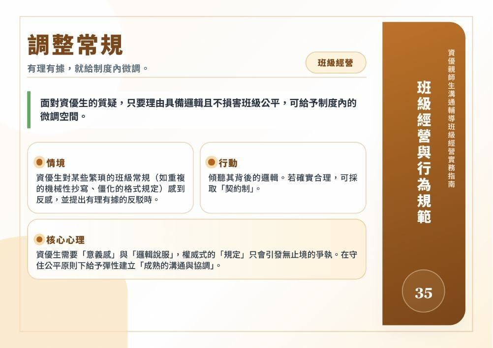
查看牌卡插畫 · PDF 第 78 頁
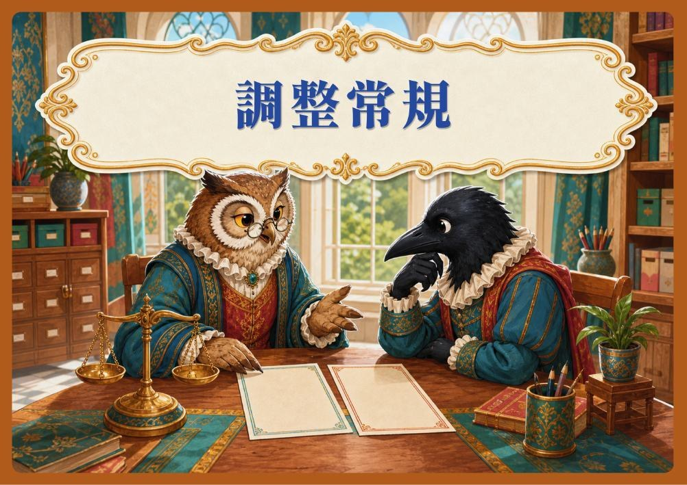
體諒慢板
慢不是挑釁，可能是發展落差。
認知到部分資優生在動作技能上的困難並非態度問題，而是神經心理發展的落差，給予合理的容錯空間與時間彈性。
情境
具備NLD（非語文型學習障礙）、特教生（雙重特殊需求學生）特質的資優生，在課堂中出現抄寫過慢、動作笨拙、體育課跟不上時。
教師行動
停止將「動作慢」解讀為「故意拖延」或「挑釁」。允許他們使用替代方案（如：口述代替書寫、拍照記錄黑板內容、減少重複抄寫作業），並給予較寬鬆的完成時限。
核心心理
這類學生常面臨「認知能力高」與「執行功能低」的巨大內在撕裂，自己也感到挫折。教師若施加道德指責（如「你就是懶」），會加重他們的無力感與自我懷疑。
對照原文 · PDF 第 81 頁
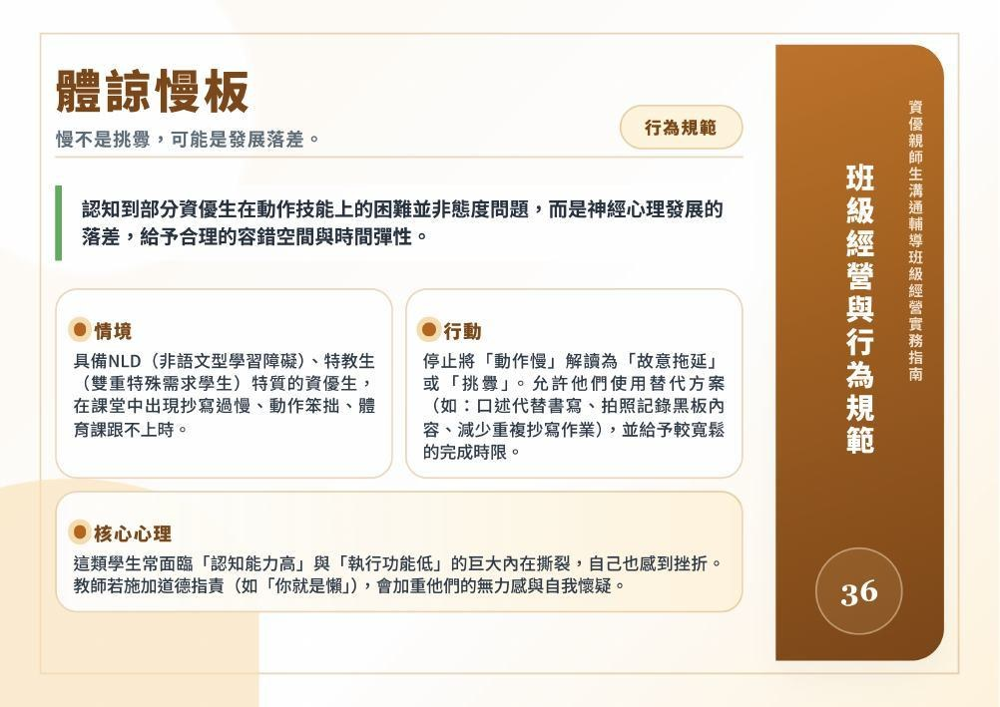
查看牌卡插畫 · PDF 第 80 頁
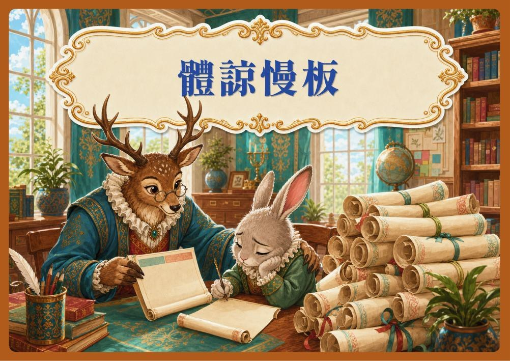
課餘補缺
短短補上關鍵，避免挫折擴大。
對於因參與資優課程而落後原班進度的學生，提供短暫且具體的課後輔導，防止因短暫落後演變為全面拒學。
情境
資優生因頻繁抽離、參加比賽，回校後對進度感到茫然，成績下滑，表現出挫折或開始排斥學習時。
教師行動
導師或任課教師利用零碎時間（5~10分鐘即可），主動為其點出錯過的關鍵概念或重點。
核心心理
習慣保持優勢的資優生，面對突發的「聽不懂」或「考不好」，易產生強烈的挫敗感，甚至為了保護自尊而選擇「放棄（拒學）」作為替代理由。
對照原文 · PDF 第 83 頁
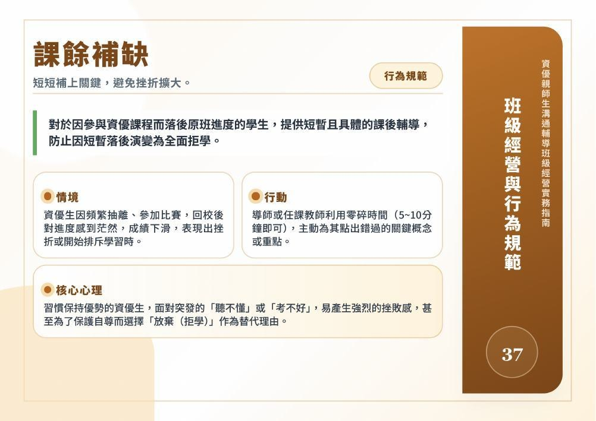
查看牌卡插畫 · PDF 第 82 頁
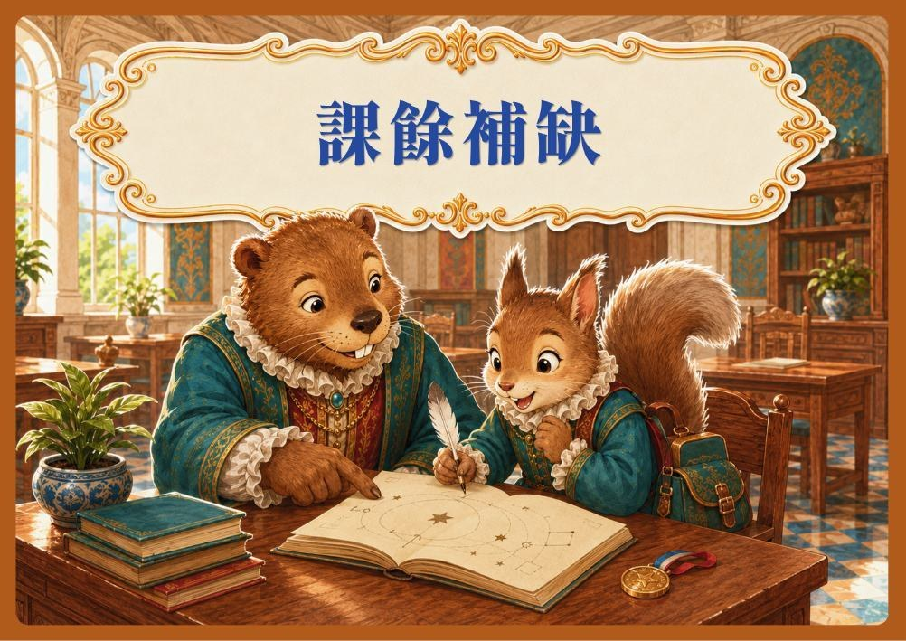
接納包容
讓差異成為班級日常。
在班級中形塑「差異即日常」的包容氛圍，引導普通生理解並接納具備亞斯伯格等特殊氣質的同學，防堵惡意排擠。
情境
班上有行為模式特殊（如：對特定事物極度執著、活在自己世界）的亞斯伯格症或特異資優生，在分組討論或日常互動中成為班級異類時。
教師行動
導師以身作則展現包容，示範如何與該生平靜互動；並私下向班上具有同理心的意見領袖溝通，賦予他們「守護者」的角色，帶動全班以平常心看待差異。
核心心理
對於社交直覺較弱的亞斯生來說，他們並非刻意引發衝突。由導師主導建立一個安全網，保護特殊生免受霸凌，也是對普通生良好的生命教育。
對照原文 · PDF 第 85 頁
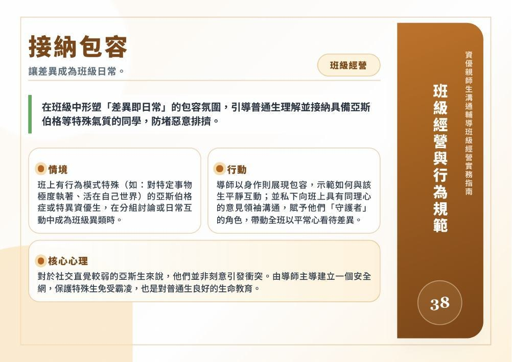
查看牌卡插畫 · PDF 第 84 頁